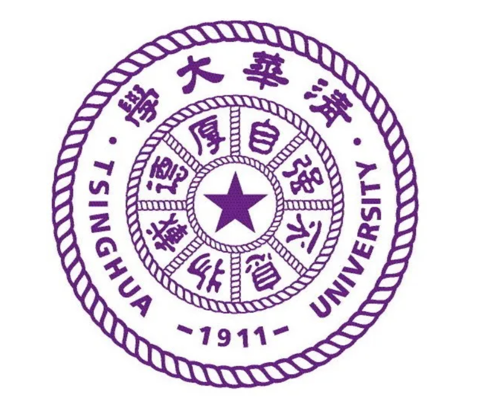
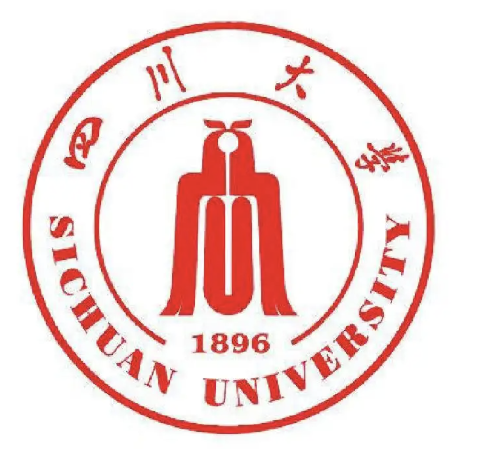

凡航 |
凡航，重庆人，现任华北电力大学经济与管理学院讲师、硕士生导师。2015 年 6 月获四川大学电气信息学院（吴玉章学院）工学学士学位，2021 年 6 月获清华大学电机工程与应用电子技术系博士学位（导师：梅生伟教授），期间曾访问哈佛大学工程与应用科学学院，并完成清华大学研究生院大数据能力提升项目。2023 年 9 月清华大学五道口金融学院博士后出站（导师：廖理教授；与清华大学交叉信息研究院徐葳教授联合培养），随后加入华北电力大学经济与管理学院。
长期从事电气工程、人工智能和金融交叉研究，重点关注能源经济学、电力市场人工智能、新能源预测、隐私计算和数据要素流通。主持和参与电网与人工智能类科技项目 10 余项，发表/录用 SCI/EI 和核心期刊论文 40 余篇，已授权发明专利 9 项，撰写数据经济与电力市场相关专著 3 本。
能源经济学与电力市场机制设计
人工智能技术在电力市场中的应用
新能源功率、电价和电动汽车充电负荷预测
隐私计算、联邦学习与能源数据要素可信流通
| 指标 | 全部 | 2021 年以来 |
|---|---|---|
| 引用 | 579 | 551 |
| h-index | 12 | 12 |
| i10-index | 14 | 14 |
数据来自 Google Scholar，更新于 2026 年 6 月；研究关键词包括 Electricity Market、Time Series Prediction、Deep/Machine Learning。
讲师、硕士生导师，华北电力大学经济与管理学院（2023.9 至今）
|
|
 |
博士后，清华大学五道口金融学院（2021.9 至 2023.9）
|
博士，清华大学（2015.9 至 2021.6）
|
|
 |
本科，四川大学（2011.9 至 2015.6）
|
河北省自然科学基金面上项目：基于生成式人工智能的分布式光伏多时空尺度功率预测研究，2025 至 2027，在研，主持。
新型电力系统运行与控制全国重点实验室开放课题：复杂动态环境下电动汽车充电负荷多模态精准预测研究，2025 至 2026，在研，主持。
新能源电力系统智慧运行教育部重点实验室开放课题：面向青海现货市场的压缩空气储能电价预测与智能竞价策略研究，2026.04 至今，主持。
华北电力大学中央高校基本科研业务经费：基于联邦学习的电车充电负荷预测模型研究，2024.05 至 2025.12，主持。
气象风险与保险联合开放实验室开放基金项目：面向跨区域风资源波动风险的联合指数保险产品开发与定价研究，2025.10 至今，在研，主持。
南方电网公司科技项目：电力市场下建筑集群负荷协调控制技术，2025.08 至今，在研，主持。
国家电网公司总部科技项目：电力市场领域大语言模型构建技术及其应用研究，2024.06 至今，在研，主持。
国网上海市电力公司项目：上海新型储能参与电力市场机制设计及运用影响研究，2023.11 至 2024.12，已结题，主持。
国家自然科学基金面上项目：极端天气动态演化下含灵活资源的新型电力系统多尺度韧性分析与提升策略研究，2025.01 至 2028.12，在研，参与。
中国电机工程学会第十届青年托举人才。
全国人工智能应用场景创新挑战赛智能能源专项赛二等奖，排名第一。
国网上海市电力公司科技进步二等奖：适应新型主体的上海电力灵活交易与定价技术应用。
国际金融产品设计与研发大赛一等奖。
第二届全国大学生电力市场交易能力大赛优秀指导教师奖。
清华大学 “Rong” 奖学金特等奖、清华大数据数据故事计划最佳学术奖、国家奖学金、唐立新奖学金等。
Ying Lu, Hang Fan, Weican Liu, Zuhan Wang, Yifan Zhao, Dunnan Liu. A Novel Probabilistic Electricity Price Forecasting Framework with Multi-Factorial Cross-Correlation Embedding and Patch Processing. Energies, 2026, 19(10): 2438.
Hang Fan, Weican Liu, Zuhan Zhang, Ying Lu, Wencai Run, Dunnan Liu. IDS-Net: A novel framework for few-shot photovoltaic power prediction with interpretable dynamic selection and feature information fusion. Advanced Engineering Informatics, 2026, 72: 104455.
Hang Fan, Yunze Chai, Chenxi Liu, Weican Liu, Zuhan Zhang, Wencai Run, Dunnan Liu. EV-STLLM: Electric vehicle charging forecasting based on spatio-temporal large language models with multi-frequency and multi-scale information fusion. Expert Systems with Applications, 2026, 313: 131620.
Hang Fan, Weican Liu, Zuhan Zhang, Wencai Run, Yunjie Duan, Dunnan Liu. EPformer: Unlocking day-ahead electricity price forecasting accuracy using the time-frequency domain feature learning strategy considering renewable energy. Renewable Energy, 2026: 125296.
Hang Fan, Mingxuan Li, Zuhan Zhang, Long Cheng, Yujian Ye, Dunnan Liu. M2WLLM: Multi-modal multi-task ultra-short-term wind power prediction algorithm based on large language model. Information Fusion, 2026, 126(Part A): 103541.
Jiajun Wu, Yanjun Shen, Ruitong Yang, Hang Fan*, Yunjie Duan. Electric-carbon market coupling and price transmission mechanism in China: An empirical analysis and development barriers study. Journal of Cleaner Production, 2026, 544: 147692.
Hang Fan, Xiaoyu Fan, Wei Wei, Tianyi Hao, Kun Chen, Guosai Wang, Wei Xu. Privacy preserving ultra-short-term prediction in clustered wind farms with encrypted data sharing: A secure multi-party computation approach. Expert Systems with Applications, 2025, 278: 127218.
Hang Fan, Zhi Li, Yunjie Duan, Boyu Wang. Incentive policy formulation for China's electric vehicle market: Navigating pathways to sustainable mobility with a green premium analytical model. Energy Policy, 2025, 202: 114610.
Hang Fan, Shijie Ji, et al. ELM-Bench: A Multidimensional Methodological Framework for Large Language Model Evaluation in Electricity Markets. Energies, 2025, 18(15): 3982.
Zhi Li, Hang Fan*, Shuyan Dong, Dunnan Liu. Green premium modeling based on total cost ownership analysis: From the Chinese electric vehicle sales forecasting perspective. Journal of Cleaner Production, 2023: 139679.
Boyu Wang, Xiaofeng Xu, Genzhu Li, Hang Fan*, Ning Qiao, Haidong Chen, Dunnan Liu, Tongtao Ma. A study of electricity sales offer strategies applicable to the participation of multi-energy generators in short- and medium-term markets. Sustainable Energy, Grids and Networks, 2024, 40: 101553.
Chenyu Liu, Xuemin Zhang, Shengwei Mei, Qingyu Zhou, Hang Fan. Series-wise Attention Network for Wind Power Forecasting Considering Temporal Lag of Numerical Weather Prediction. Applied Energy, 2023, 336: 120815.
Kunjin Chen, Yu Zhang, Qin Wang, Jun Hu, Hang Fan, Jinliang He. Scale-and Context-Aware Convolutional Non-Intrusive Load Monitoring. IEEE Transactions on Power Systems, 2019, 35(3): 2362-2373.
凡航，徐葳，范晓昱，王云河. 隐私计算在新型电力系统中的应用分析与展望. 电力系统自动化，2023, 47(19): 187-199.
杨玉颖，凡航*，刘敦楠，张祖菡，许珂，等. 能源电力行业数据要素定价研究. 大数据，2026, 12(01): 174-188.
张祖菡，刘敦楠，凡航*，杨柳青，段赟杰，李赟，马振宇. 基于大语言模型的电力系统预测技术研究综述. 发电技术，2025, 46(03): 438-453.
Hang Fan, Xuemin Zhang, Shengwei Mei, Kunjin Chen, Xinyang Chen. M2GSNet: Multi-Modal Multi-Task Graph Spatiotemporal Network for Ultra-Short-Term Wind Farm Cluster Power Prediction. Applied Sciences, 2020, 10(21): 7915.
Hang Fan, Xuemin Zhang, Shengwei Mei, Junzi Zhang. A Markov Regime-Switch Model for Ultra-Short-Term Wind Power Prediction based on Toeplitz Inverse Covariance Clustering. Frontiers in Energy Research, 2021.
凡航. 新型电力系统下能源数据要素可信流通与资产化. 中国经济出版社，2025.
刘敦楠，凡航，史连军. 电力市场量化交易. 中国电力出版社，2025.
欢迎具有经济金融、计算机、统计学和能源环境相关背景，或对能源经济学、电力市场和人工智能应用有兴趣的同学加入课题组。